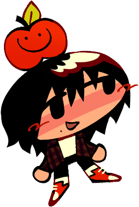
TENTANG
Hai! Namaku Tjo – Saya orang berumur 20an yang mengelola situs ini. Inilah arsip yang terus-menerus diperbarui, di mana saya memamerkan semua pembuatan saya - karya seni, ngoding, tulisan, dan hal2 apa saja yg ku buat.
Saya suka cuaca hangat dan sinar matahari, makanan kesukaanku adalah nasgor dan apel fuji, dan binatang kesukaanku adalah domba, ikan dan serangga2 lucu. Saya juga demen sama videogame - walaupun seringkali ga punya waktu luang untuk main, saya suka gambar fanart buatnya.
Saya menggambar terus sejak masih anak kecil. Sampe sekarang, masih belom tau cara lepasin pensil. Saya suka banget membuat karya seni malah pada tahun 2024 saya mengode situs ini biar bisa konek dan kasih lihat karya saya kepada orang lain - termasuk kamu!
Saya mengelola toko stiker kecil online. Jika kau ingin membantuku mencapai impianku (yaitu menggambar untuk selamanya), cara terbaik adalah membeli stiker saya atau membagi situs ini kepada orang lain! Makasih!
Silahkan menghubungi saya lewat amfmrdoart@gmail.com mengenai apa saja :)
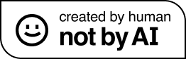

FAQ
- ＊Gambar pake apa?
- ＊Pake kuas apa?
- ＊Boleh pake gambarmu sebagai ikon/banner/dll? Silahkan! Saya akan sangat berterima kasih jika Anda mencantumkan kredit kepada saya sebagai “amfmradio.org” atau “@amfmrdo”, namun saya tidak terlalu kaku soal hal ini. Dulu saya gak mengizin gambarku direpost tapi sekarang saya sudah ga gitu peduli. Hanya saja, jangan ngedit gambarku dengan niat jahat... :(
- ＊Apakah kamu membuat stiker sendiri? Saya menggambar dan mendesain semuanya sendiri, tapi proses produksi ditangani oleh Stickerbunnies. Saya punya tutorial menyiapkan gambar buat dicetakin sebagai stiker (walaupun dalam inggris) jika kamu ingin tau itu.
- ＊Kenapa kamu membuat situs ini? Menurutku, situs2 indie itu salah satu hal2 yang paling keren yang bisa ditemukan di internet dan ia bener2 menunjukkan bagaimana walaupun kita di zaman medsos dan "vibe-coding"/AI generatif (tolol itu btw), masih banyak orang di dunia ini yang cape2 berusaha ngode situs web pribadi secara manual - selama berjam2 - hanya demi kecintaan pada prosesnya itu sendiri. Saya adalah salah satu dari mereka.
- ＊Bikin situs web susah ga? Gimana caranya kamu belajar ngoding? Ngoding itu jauh lebih gampang dari apa yang lu mikir! Situs saya 99% hanya HTML dan CSS, dan semuanya saya belajar sendiri di waktu luang saya. Saya membahasnya secara rinci disini (dalam inggris). Bagian besar saya belajar pake situs pendidikan, atau dari nonton video yutub. Sekarang itu zaman internet, kalo ada pertanyaan apapun, tinggal gugel, terus jawabanya di depan matamu...
 Saya menggunakan Clip Studio Paint EX untuk hampir semuanya. Sebelumnya saya pake FireAlpaca dan Medibang Paint (merekomendasikan ini untuk pemula gambar digital). Buat ngedit pake Photopea dan dither.it. Buat sampul blog bulanan saya nyusunin teks pake Adobe Illustrator. Tablet gambarku Huion Inspiroy 950P (jauh lebih terjangkau dibanding Wacom, dan cukup tahan lama). Kadang pake Aseprite buat pixel art.
Saya menggunakan Clip Studio Paint EX untuk hampir semuanya. Sebelumnya saya pake FireAlpaca dan Medibang Paint (merekomendasikan ini untuk pemula gambar digital). Buat ngedit pake Photopea dan dither.it. Buat sampul blog bulanan saya nyusunin teks pake Adobe Illustrator. Tablet gambarku Huion Inspiroy 950P (jauh lebih terjangkau dibanding Wacom, dan cukup tahan lama). Kadang pake Aseprite buat pixel art.
 Saya punya beberapa tutorial gambar jika kamu ingin tau atau niru apa yang ku lakukan.
Semua sketsa saya digambar di dalam buku sketsa murah pake pen sarasa atau pentel energel.
Saya punya beberapa tutorial gambar jika kamu ingin tau atau niru apa yang ku lakukan.
Semua sketsa saya digambar di dalam buku sketsa murah pake pen sarasa atau pentel energel.
 Lineart: Bijobiyo Letter Brush kuas utamaku. Knucklehead kuas keduaku.
Mewarna: Paint bucket tool. Kalo mau tambah tekstur pake ayamtepung.
Lineart: Bijobiyo Letter Brush kuas utamaku. Knucklehead kuas keduaku.
Mewarna: Paint bucket tool. Kalo mau tambah tekstur pake ayamtepung.

 Saya pikir situs web indie itu salah satu bentuk karya seni/ekspresi diri paling keren dan saya sangat senang bisa berkesempatan menjadi bagian darinya. Berteman2 dengan seniman dan webmaster lain dari seluruh dunia adalah, bagiku, makna sesungguhnya dari kehidupan... Saya mengharap jargon ini menginsipirasimu untuk membuat situs web sendiri!
Saya pikir situs web indie itu salah satu bentuk karya seni/ekspresi diri paling keren dan saya sangat senang bisa berkesempatan menjadi bagian darinya. Berteman2 dengan seniman dan webmaster lain dari seluruh dunia adalah, bagiku, makna sesungguhnya dari kehidupan... Saya mengharap jargon ini menginsipirasimu untuk membuat situs web sendiri!
Koleksi situs teman2 dan orang lain. Silahkan jelejahi! Jika kau ngelink saya dan ingin saya ngelink kamu balik, kasih tau di buku tamu :)
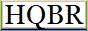

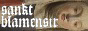
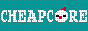
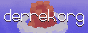
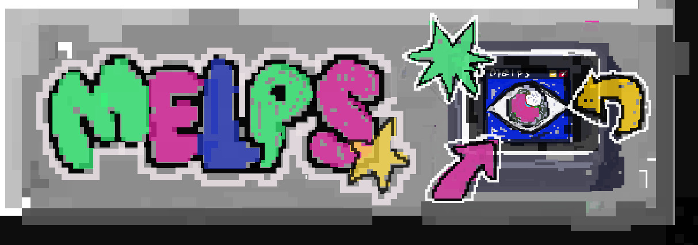

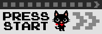
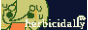
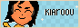
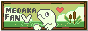
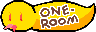

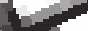
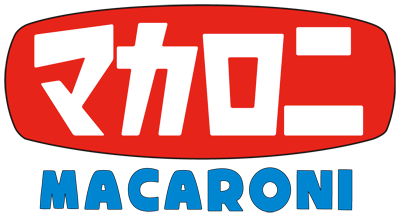
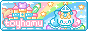

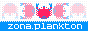
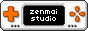


link me!


© 2024-2026 amfmradio.org